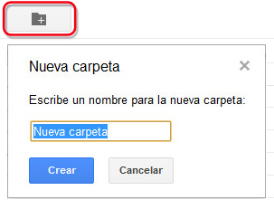
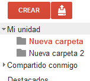

Las carpetas en Drive nos resultarán muy útiles a la hora de organizar nuestros archivos. Además, el trabajo con carpetas nos permite gestionar los atributos de varios archivos a la vez, lo cual, nos ahorrará tiempo y esfuerzo.
Para crear una carpeta sólo tenemos que hacer clic sobre el icono de la carpeta con el signo más, situada en la parte superior. Aparecerá un cuadro de diálogo en el que introduciremos el nombre de la nueva carpeta. Pincharemos luego en Crear.
También podremos crear carpetas desde la opción CREAR. Elegiremos desde este menú la opción "Carpetas".

Hecho esto, veremos cómo se ha creado una nueva carpeta que podremos visualizar en el menú izquierdo. Podemos crear tantas carpetas y subcarpetas como queramos.